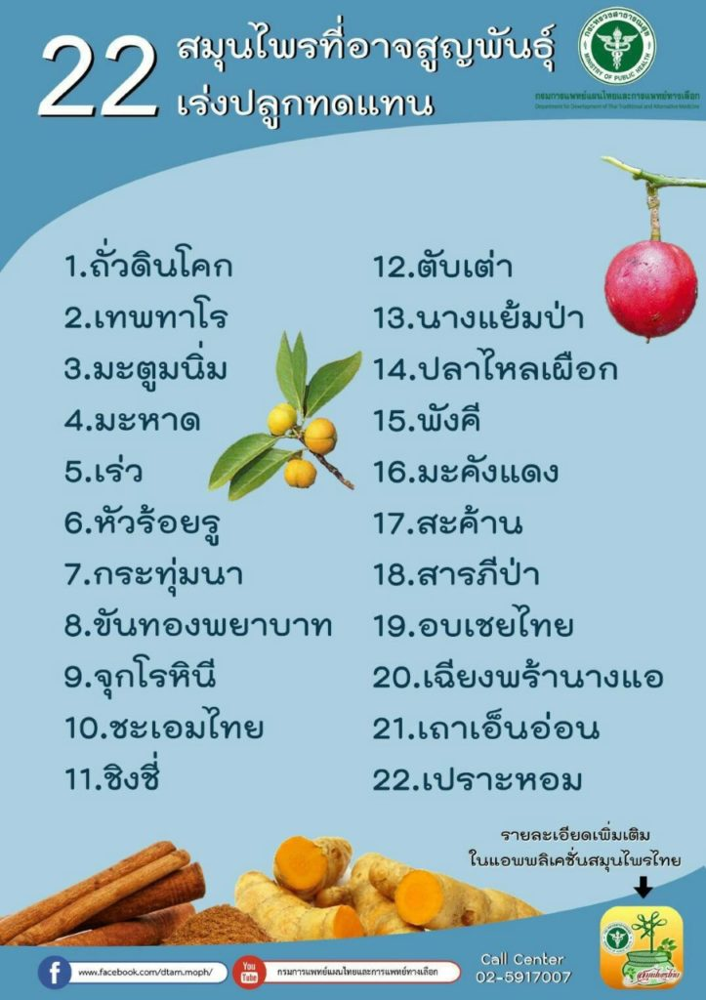
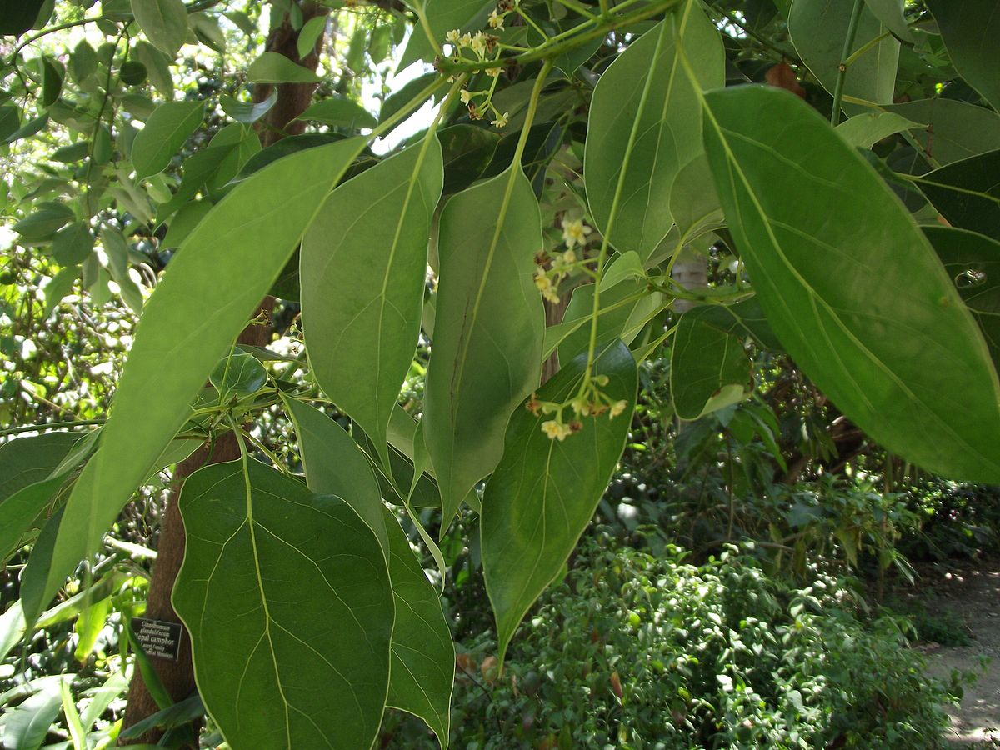
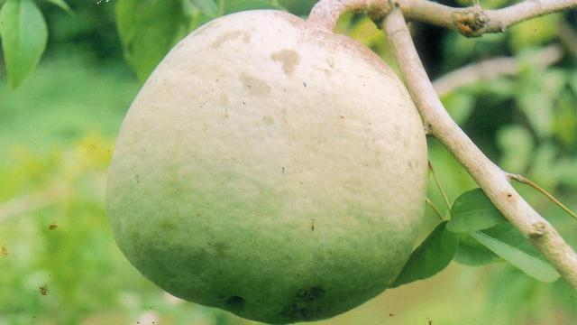

ประกาศรายชื่อ “สมุนไพรไทย” 22 ชนิดเสี่ยงสูญพันธุ์ เหตุเติบโตช้า เมื่อใช้ต้องใช้ทั้งต้น หรือทั้งราก หรือใช้บ่อยจึงรักษาได้ คัดเลือกสมุนไพร 7 ชนิด ออกประกาศคุ้มครองและควบคุม ผู้ครอบครองต้องแจ้งจำนวนที่มี เพื่อทำแผนการใช้และการปลูกทดแทน
ขณะนี้มีสมุนไพรไทย 22 ชนิด ที่เสี่ยงอาจจะสูญพันธุ์ได้ ประกอบด้วย 1. ถั่วดินโคก 2. เทพทาโร 3. มะตูมนิ่ม 4. มะหาด 5. เร่ว 6. หัวร้อยรู 7. กระทุ่มนา 8. ขันทองพยาบาท 9. จุกโรหินี 10. ชะเอมไทย 11. ชิงชี่ 12. ตับเต่า 13. นางแย้มป่า 14. ปลาไหลเผือก 15. พังคี 16. มะคังแดง 17. สะค้าน 18. สารภีป่า 19. อบเชยไทย 20. เฉียงพร้านางแอ 21. เถาเอ็นอ่อน และ 22. เปราะหอม
โดยเลือกสมุนไพร 7 ชนิดจาก 22 ชนิดขึ้นมา คือ คือ ถั่วดินโคก หรือ พิษนาศน์ เทพทาโร มะตูมนิ่ม มะหาด เร่ว กระวาน และ หัวร้อยรู เพื่อประกาศคุ้มครองและเป็นสมุนไพรที่ต้องควบคุม โดยหากใครมีสมุนไพร 7 ตัวนี้อยู่ในครอบครองไม่ได้ถือว่ามีความผิด เพียงแต่ต้องแจ้งมาทาง สธ. ให้รับทราบว่ามีอยู่เท่าใด เพื่อที่จะจัดทำแผนส่งเสริมการปลูกต่อไป เช่น บริษัทใดมีสมุนไพร 7 นี้อยู่ ใช้ผลิตยาไปเท่าใด ต้องปลูกทดแทนเท่าใด เพื่อไม่ให้สูญพันธุ์

1. ถั่วดิน
2. เทพทาโร
3. มะตูมนิ่ม